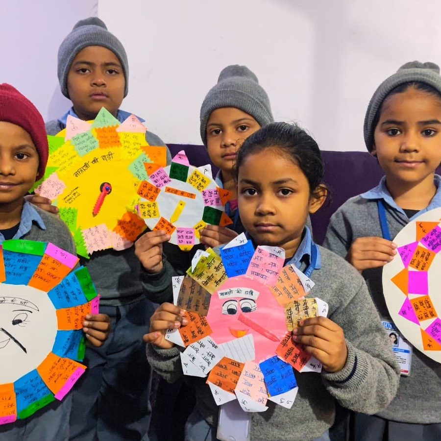
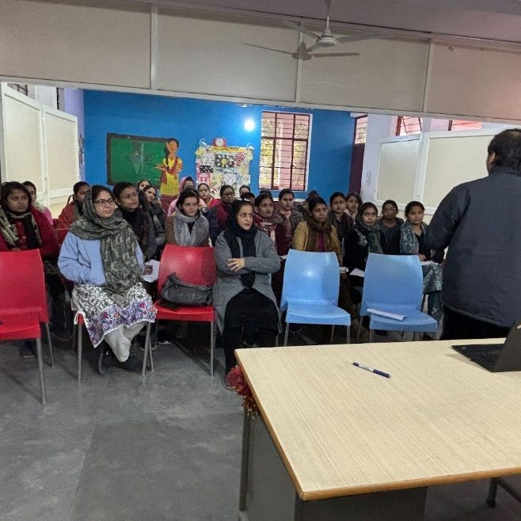
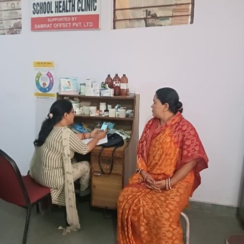
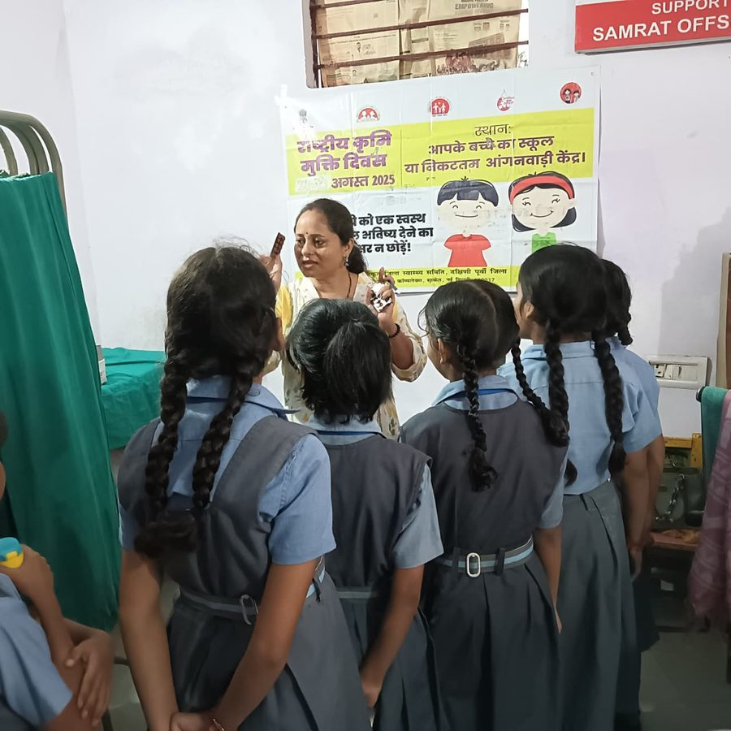
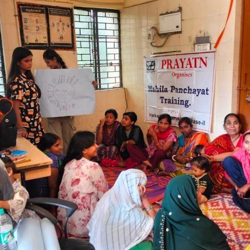
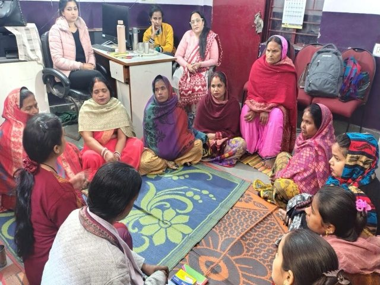

Our work
Education, healthcare and women’s development — three areas, in one neighbourhood, since 1992.
Education
A school in the community, and support for students who would otherwise have to stop.
School is rarely a given
Fees, distance, a household that needs another pair of hands earning, a parent who never went to school — any one of these can end a child’s education before it starts. None has anything to do with how capable the child is.
Seth Vidyalaya is our school in the middle of the community. Children learn, play and are prepared for the world beyond the classroom — many of them the first in their family to attend school at all.
Our Scholarship Scheme for Meritorious Students exists for the moment families run out of resources: when a student is doing well but the next stage costs more than the household can carry.

Parents help run the school
A fifteen-member School Management Committee — parents’ representatives, teachers, trustees and members from educational institutions — reviews the school’s progress and develops its plan of action.
Alongside it, a Parent Teacher Association keeps parents involved in what happens day to day. For parents who did not finish school themselves, sitting on a committee that governs their child’s education is not a small thing.

The children here are often the first in their families to finish school. That changes what the next generation believes is possible.Prayatn · education
Healthcare
Everyday care close to home, and health programmes that reach children in school.
Care within walking distance
Healthcare is fundamentally important for individual well-being and societal prosperity — ensuring longer, more fulfilling lives and a productive workforce.
For families with very little the barrier is rarely medicine. It is distance, cost and time: a trip to a distant hospital costs a day’s wages before anyone is seen. So people wait, borrow, and arrive far later than they should have.
Swaasthya Kendra, our community health centre, is the place a family can walk into when someone is unwell, without first calculating what the trip will cost.

Health care taken into the classroom
Our School Health Program provides regular check-ups, awareness sessions and follow-up care for school children — so that being unwell never quietly becomes the reason a child stops attending.
Screening in school reaches the children who would never otherwise be brought to a doctor. A child does not report failing eyesight. They simply stop following the lesson, and get marked down as inattentive.
Because Prayatn runs both a school and a health service, a problem noticed in a classroom gets dealt with rather than merely observed.

A child who cannot see the blackboard is not a slow learner. Running a school and a health centre together is how we notice.Prayatn · healthcare
Women Development
Comprehensive care and support for women survivors of gender based violence.
Safety, dignity and the means to stand on your own
Gender based violence is usually a long situation rather than a single event — bound up with where a woman lives, what she earns, and what she believes will happen if she speaks.
Addressing Gender Based Violence in Communities provides comprehensive care and support to women survivors, delivered where they live. A woman may need to talk safely, to know what her options are, to have someone go with her to a police station or a court, or to work out where she and her children would live — very often all of it, across many months.
Our role is to make sure she knows her real options and to support the choice she makes. Women often approach, withdraw and return months later. That is normal, not failure. The door stays open.

Independence is what makes safety last
A woman who cannot support herself has fewer real choices, whatever the law says. Skill development sits at the centre of what Prayatn is for.
For women who have left violent situations, an income of their own is often the difference between a decision that holds and one that reverses within a year.

Prayatn runs on people who decided to show up
An hour a week, a professional skill, a child’s school year, a box of books — there is a way for you to be part of this.